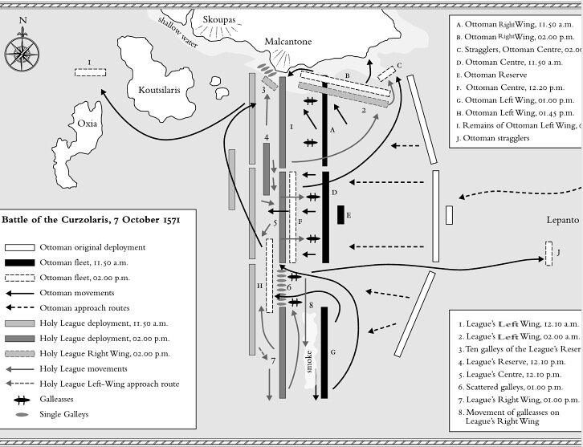
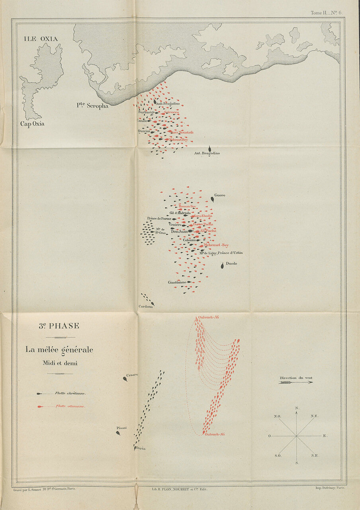

Джованни Андреа Дориа против Улудж Али: увертюра
Когда мы заканчивали описание первых фаз сражения при Лепанто, то привели общую картину обстановки, которая сложилась на южном фланге.

Схема сражения при Лепанто. Из книги Н.Каппони Lepanto 1571. La Lega santa contro l'Impero ottomano
Вернемся сейчас к тому моменту 7 октября 1571 года, когда на южном фланге битвы при Лепанто христианская и турецкая эскадры под командованием соответственно Джованни Андреа Дориа и Улудж Али-паши медленно спускались к югу, все больше удаляясь в открытое море. Разрыв между южным крылом христиан и основными силами северной и центральной эскадр увеличивался и достиг уже одной мили. Наблюдатели с обеих сторон зорко следили за маневрами противника, докладывая о всех изменениях курса и скорости своим командирам, которые старались «подловить» врага на любом неверном шаге и в то же время не допустить ошибок в своих тактических расчетах. Для Улудж Али основной задачей было не попасть под огонь венецианских галеасов, которые выдвигались на позиции перед южным крылом христиан. Вместе с тем, Улудж стремился нарушить боевой порядок на правом фланге флота Священной лиги, и тем самым нейтрализовать численное превосходство христиан над мусульманами. Поэтому Улудж Али время от времени давал команду остановить свои корабли и произвести прицельные залпы по христианским галерам.
Считается, как мы писали раньше, что главнокомандующий силами Священной лиги Дон Хуан Австрийский еще до начала сражения знал о предполагаемом уходе галер своего правого фланга на юг. Но если принять такую гипотезу, то становится непонятным его решение направить корабль связи с предупреждением Дориа не допускать разрыва между его галерами и основными силами христиан. Скорее всего, такой разрыв сложился в результате естественного развития обстановки на южном фланге от действия обеих сторон и не планировался заранее. Не находит подтверждение и широко обсуждаемый впоследствии вариант, согласно которому и Дориа и Улудж берегли свои корабли, которые были основой их благополучия и их власти. По крайней мере, в части, касающейся Дориа. Ведь если мы вспомним боевые порядки флота христиан перед битвой, то нам нетрудно будет убедиться, что корабли Дориа были не только на южном фланге, но и в Центре и на северном крыле, причем, там их было больше, чем в непосредственном распоряжении Дориа на юге. Этот принцип был заложен Доном Хуаном еще на стадии планирования операции, как мы помним. Сомнительным является и предположение, что разведке Габсбургов, о мероприятиях которой мы писали в нескольких предыдущих постах, удалось добиться положительного результата в привлечении Улудж Али-паши на свою сторону, и обе эскадры на южном фланге лишь имитировали ведение боевых действий, фактически лишь затягивая время в ожидании развязки. Такую версию впервые выдвинул историк испанского флота Фернандес Дуро еще в конце девятнацатого века. Но совершенно очевидно, что и Дориа, и Улудж не могли знать наперед, что они сойдутся лицом к лицу в предстоящем сражении: более того, по данным разведки османов Дориа вообще не должен был принимать участие в бою.
Остается вполне естественное предположение, что действия Дориа были продиктованы стремлением не допустить маневра алжирского бейлербея, угрожавшего обходом сил христианского флота с фланга. Приходится признать, что здесь Дориа проиграл корсару Улудж Али. Легкие алжирские галиоты, из которых в основном состояла эскадра Улуджа, превосходили в скорости испанские галеры, и уж тем более тяжелые галеры венецианцев. На веслах у венецианцев сидели воины, а не рабы, поэтому они были накануне сражения облачены в тяжелые доспехи, что не могло не сказаться на эффективности гребли. По мере удаления к югу эскадра христиан теряла свое численное превосходство над мусульманами, венецианские галеры просто рассеялиль вдоль той самой мили, которая теперь отделяла эскадру Дориа от основных сил лиги (цифра 6 на схеме в начале поста). Впрочем, может быть не только гребля играла тут роль; возможно, венецианцы не захотели подчиниться Дориа, предпочитая вернуться в гущу боя, шедшего в это время в центре баталии.

Схема из книги Jurien de la Graviere la guerre de Chypre et la bataille de Lepante, tome 2.
О том, как алжирский корсар воспользовался ошибкой генуэзского адмирала расскажем в следующий раз.